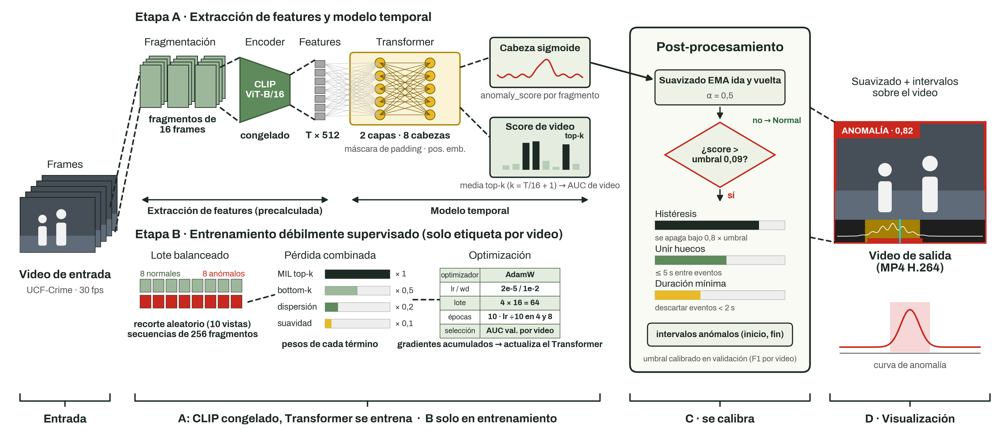
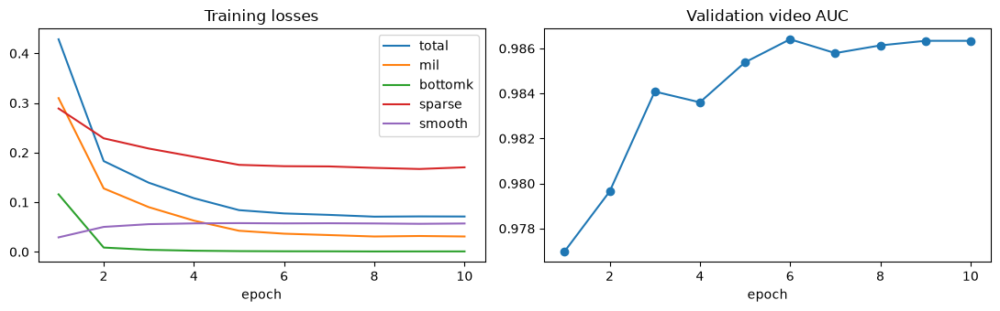
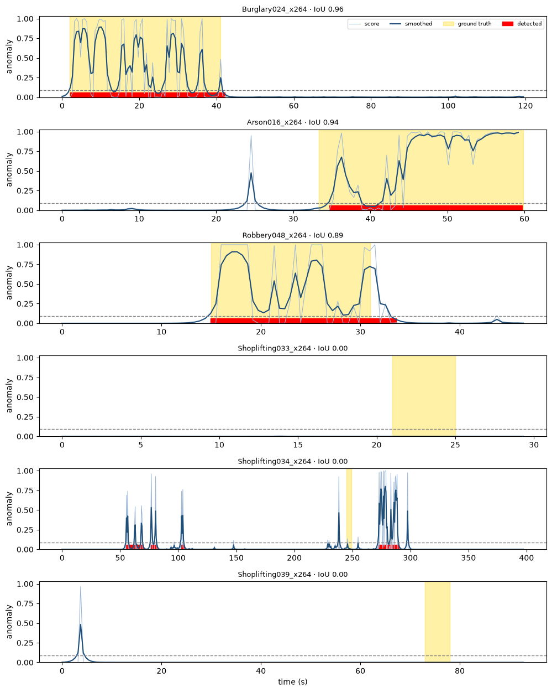
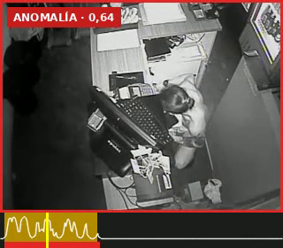
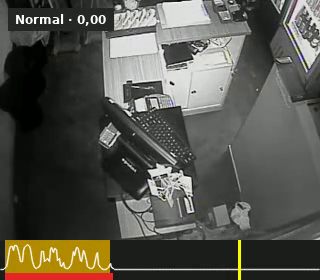

Transformer temporal sobre features CLIP, entrenado con supervisión débil en UCF-Crime
IntegrantesFelipe Vargas García · Santiago Florez Santamaría

Da una representación semántica robusta de cada escena sin entrenar un backbone visual. Usamos las features precalculadas de VadCLIP (10 recortes por video), así entrenar es rápido.
La atención compara cada fragmento con todo el video: una anomalía se reconoce por contraste con su contexto. Usamos solo 2 capas para no sobreajustar con ~1.400 videos.
Solo sabemos si el video es anómalo. Si lo es, algunos fragmentos deben tener un score alto: el promedio de los k más altos se compara con la etiqueta del video.
Codifican lo que sabemos de las anomalías: parte del video anómalo es normal, los eventos son cortos y el score cambia de forma gradual.
El post-procesamiento (EMA, histéresis, unión de huecos y duración mínima) convierte la curva de scores en intervalos legibles.
| Split | Normal | Anóm. | Total |
|---|---|---|---|
| Train | 680 | 688 | 1.368 |
| Val (15 %) | 120 | 122 | 242 |
| Test oficial | 150 | 140 | 290 |
Video real de cámaras de seguridad, 13 clases de anomalía. Val estratificado por clase. Solo test tiene anotación temporal (inicio y fin del evento).
| Secuencia | 256 fragm. |
| Dim · capas · cabezas | 512 · 2 · 8 |
| Optimizador | AdamW |
| lr / weight decay | 2e-5 / 1e-2 |
| Lote | 64 (4×16) |
| Épocas | 10 |
| Umbral | 0,09 (F1 val) |
Lotes balanceados 50/50 y un recorte aleatorio por video como aumento de datos.

Pérdidas de entrenamiento (izq.) y AUC por video en validación (der.) a lo largo de 10 épocas.
Bien: Robbery (0,65), Arrest (0,46) y Burglary (0,41), eventos con una acción visible y acotada.
Mal: RoadAccidents, Explosion y Shoplifting (≈ 0,15), cada una con más de 20 videos de test.
Hipótesis: los accidentes y explosiones duran instantes pero sus efectos (humo, gente reunida) siguen en escena; el hurto en tiendas es sutil. Abuse solo tiene 2 videos de test, no es concluyente.

evento real detectado umbral

